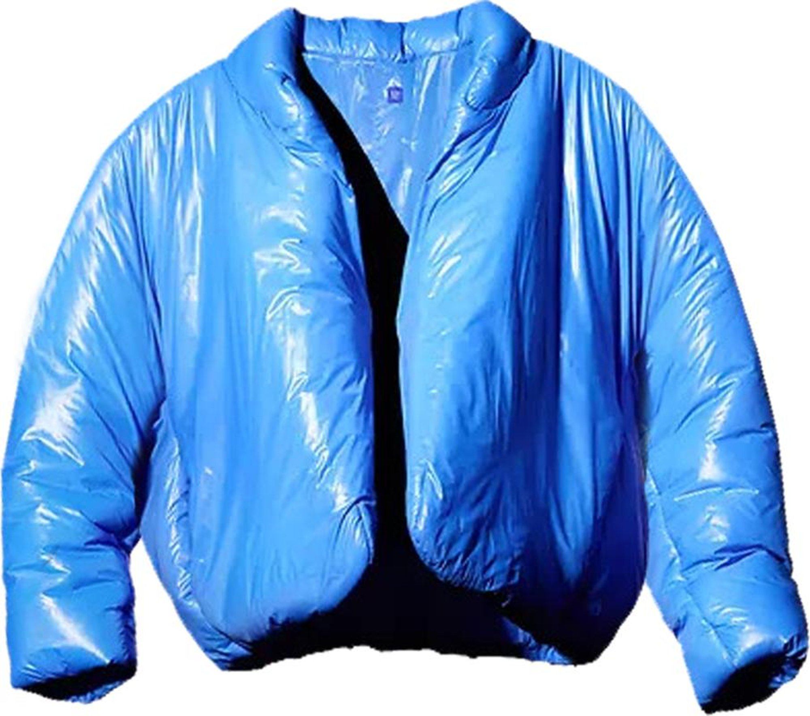
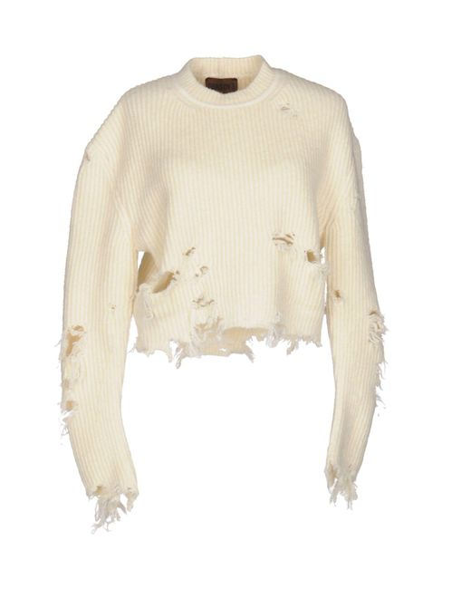

Kanye ventured out into the fashion world and has his own line of clothing. Many people doubted him early on but recently he collaborated with Gap to create his own collection. He pushes the boundaries and tries to experiment with oversized silhouettes and monochromatic styles. Although the fashion industry was apprehensive at first, Kanye made strides in the community and is considered a fashion icon. This page will explore the way Kanye made an impact in fashion.

